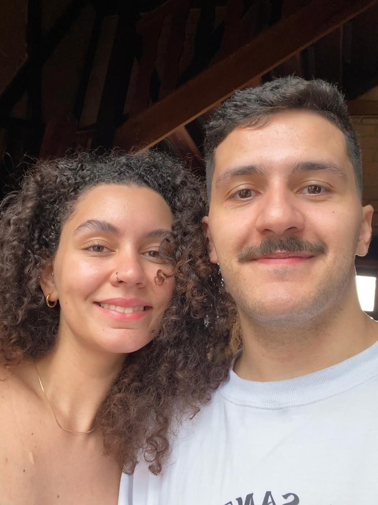

O Começo de Tudo
Por meados de Abril, do dia 30 para ser exato, foi o momento em que minha vida iria começar a mudar porém eu não sabia ainda disso, e o motivo foi conhecer a pessoa pela qual me apaixonei desde o início, a pessoa que me fez ficar acordado até as 3h da manhã de uma segunda-feira, conversando empolgado e indo dormir com o coração cheio de amor.
Com os dias passando, fui aprendendo a gostar mais e mais de falar com você, e quando a gente marcou de se encontrar, foi para mim algo pelo qual fiquei muito nervoso e apreensivo enquanto também ansioso. Lembro-me até hoje do nervosismo que eu estava, as mãos trêmulas, com medo de você me achar simplesmente feio (kkkk eu realmente achava isso) e com medo também de me envolver com alguém, mas você conseguiu fazer tudo ficar mais leve. Aquele primeiro dia para mim foi um dos mais marcantes, porque ali começava uma história na minha vida.
O Processo
A partir do nosso primeiro dia juntos, eu vi algo maior do que só beleza, vi companheirismo sem mesmo te conhecer tanto, vi carinho e uma pessoa inteligente com focos e desejos.
Todos os nossos momentos seguintes foram especiais para mim, como o dia do brechó onde a gente passou o dia todo escolhendo coisas ou o dia do Motel que mesmo sendo um rolê focado em uma coisa, a gente aproveitou muito mais do que só o que era proposto.
Teve também nossos rolês de cinema que eu particularmente amo de coração, mesmo sendo mais simples. Nossos rolês de comida para mim são os mais incríveis porque achei a minha parceira de rodízio japonês (vulgo meu tipo de comida favorita). E como eu poderia esquecer do seu aniversário onde eu conheci toda sua família e seu pai que eu fiquei assustado no começo, mas vi que ele era gente boa demais.
Quando você começou a ir em casa e conheceu meus pais, eu fiquei apreensivo demais porque achava que meus pais de alguma forma iriam fazer você se sentir desconfortável (eles não têm filtro para nada).
Somente o tempo foi me mostrando que estar ao seu lado foi a melhor decisão que já tomei na vida e eu não me arrependo de nada.
Fim e Começo
Acho que nem eu nem você nos conhecemos ja imaginando como seria um futuro junstos mas tudo aconteceu tão natural que não houve preocupação alguma, todo o processo de te conhecer, viver ao seu lado meus melhores momentos e poder compartilhar a vida com você foi e sempre será incrível. Te amar é fácil e isso me impressiona porque nunca tive essa visão de amor.
Até um certo momento, eu ainda não estava entendendo algumas coisas na minha vida, como por exemplo a minha viagem para outro país ter dado errado, mas com o tempo entendi que tinha um motivo pelo qual isso não ocorreu. Se eu tivesse ido, nunca iria poder conhecer você e eu sou grato demais por não ter ido.
Todos os dias eu lembro de você com carinho e penso no nosso futuro juntos, quero poder construir memórias ao seu lado até o dia que eu não estiver mais na terra, conquistar coisas juntos e viajar o mundo inteiro à sua companhia.
Eu não vejo a hora de poder acordar do seu lado e aprender como ser dono de uma casa também, para mim isso é muito novo e eu não vou mentir falando que não estou assustado pois estou. Porém tenho certeza de que ao seu lado vamos conseguir.
Você faz toda a diferença na minha vida e eu te amo por inteiro desde o dia que te vi pela primeira vez.
Obrigado por ser a minha namorada e futura esposa.
Quando penso na gente
26/02/2024
Hoje pensei muito em você e nos momentos juntos que nós tivemos
estou morrendo de saudade e não faz nem 24h que a gente se viu.
27/02/2024
A cada dia que passa eu tenho mais certeza de que você é a mulher da minha vida
Eu te amo.
29/02/2024
Hoje eu não estou muito bem mas ainda assim pensei na gente e nas coisas que podemos conquistar juntos.
04/04/2024
Hoje eu já acordei pensando em você, pensando nas coisas e toda a história que nós vamos construir.
Queria que soubesse o quanto você é incrível e como te admiro desde o dia que te conheci.
Meu maior pesadelo é esquecer como é bom te amar.
09/04/2024
Saudades do meu neném, de poder dormir e acordar junto
espero que a gente more junto logo.
06/05/2024
Hoje é nosso dia e eu não vejo a hora de poder te ver outra vez, espero que seja logo porque já não aguento mais esse tempo longe
09/05/2024
To com muita saudade de você, acordei pensando na gente e queria passar mais tempo ao seu lado
Você faz falta pra mim todos os dias
23/05/2024
Hoje to meio triste, mas saber que você é minha namorada e que a gente vem construindo algo incrivel juntos me deixa mais aliviado
Você é e sempre sera minha mulher, Eu te amo muito.
06/06/2024
To com saudade demais de você e fico imaginando a gente junto na nossa casa ja, agora esta bem perto de acontecer.
30/08/2024
Dessa vez eu demorei mas voltei meu amor, so passando pra dizer que vc é e sempre sera o amor da minha vida.
05/10/2024
Mesmo ao seu lado eu sinto sua falta, sinto falta do seu beijo, sinto falta da sua presença, do seu cheiro e de você por completo, eu te amo muito e penso no nosso futuro todos os dias
24/10/2024
Ultimamente estou sempre cansado por conta da faculdade e trabalho e sei que possa parecer que estou desinteressado mas eu juro que tudo que sinto por você é real, você faz meus dias sempre melhores.
Segue uma foto pra lembrar de nos dois

Essa lista será sempre atualizada